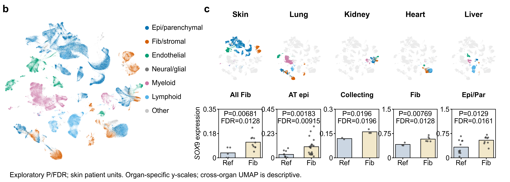
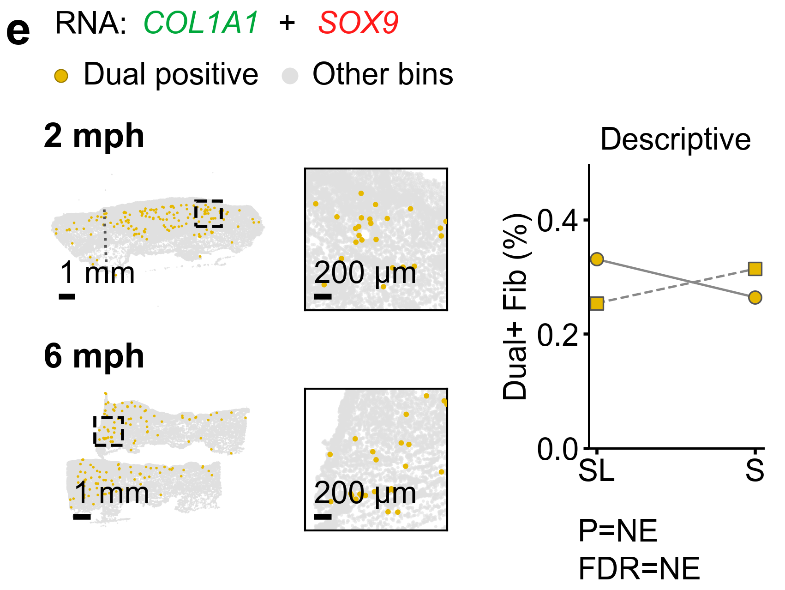
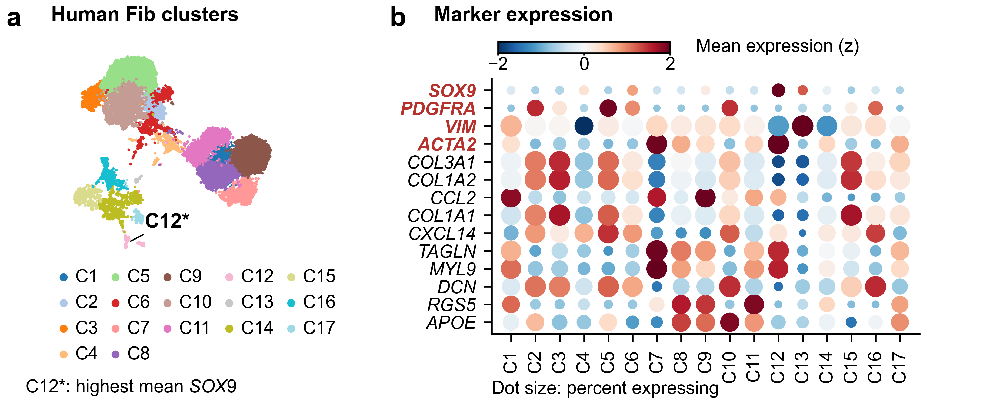
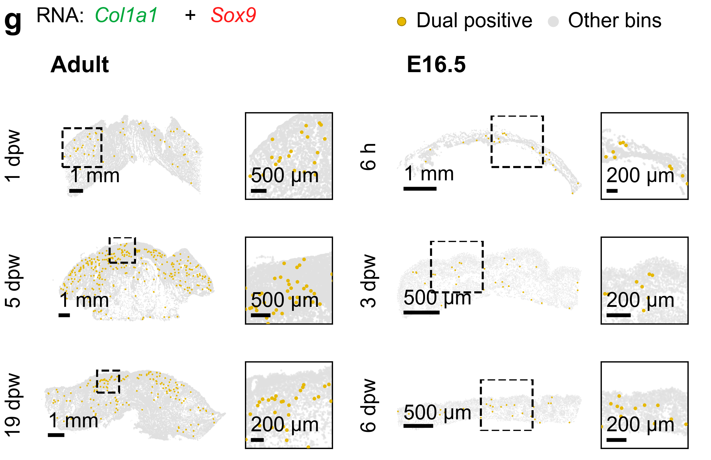
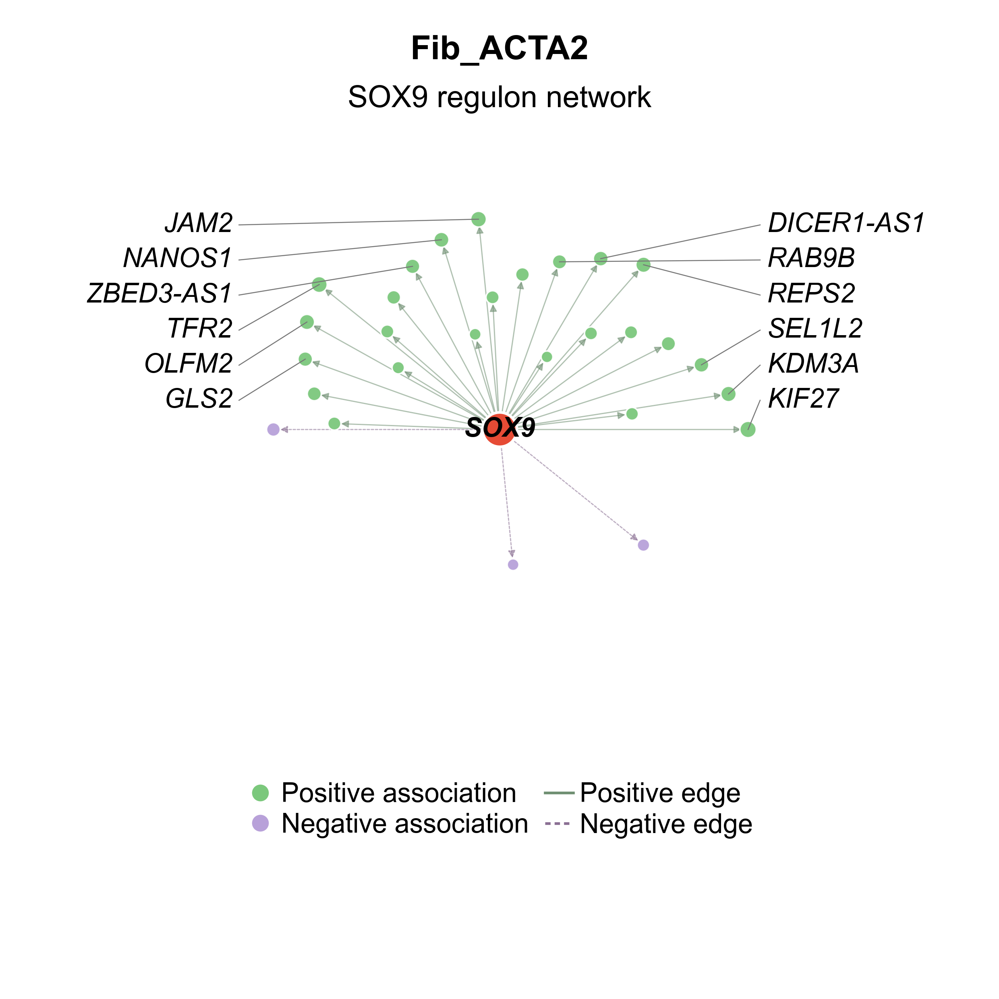
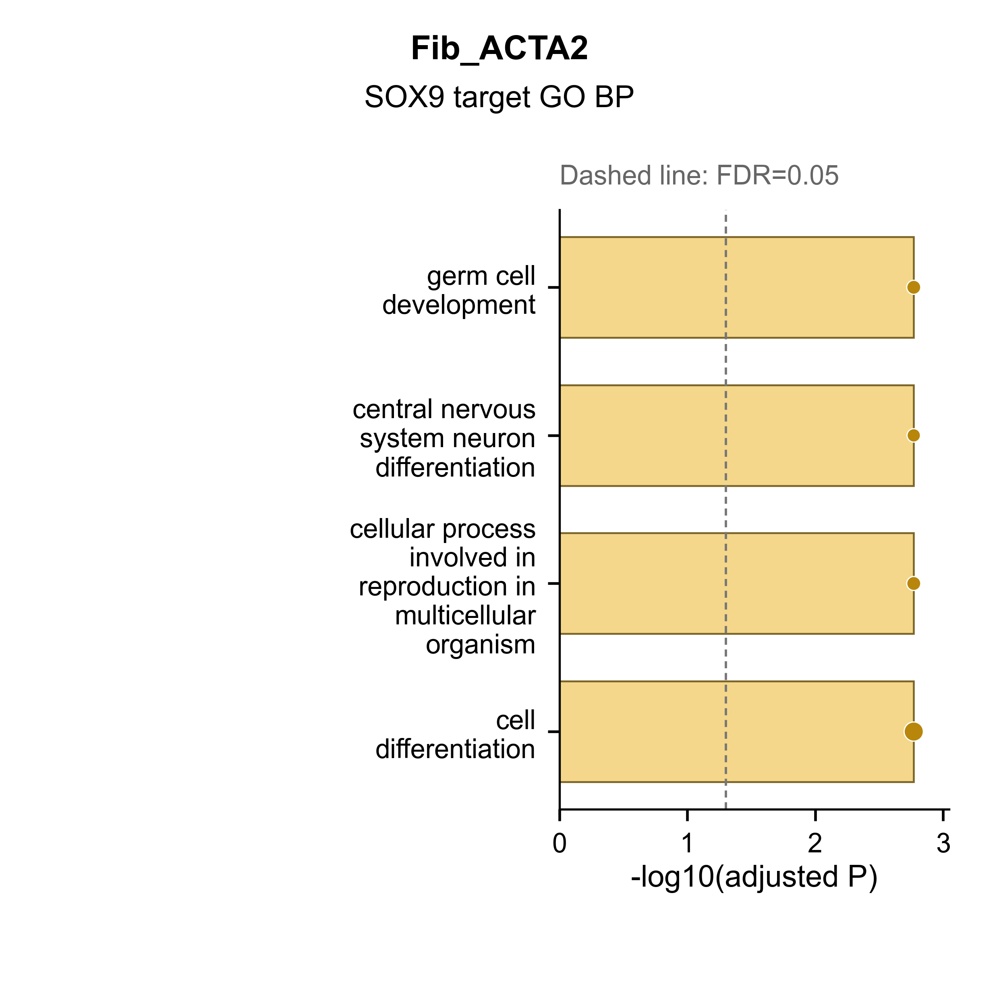
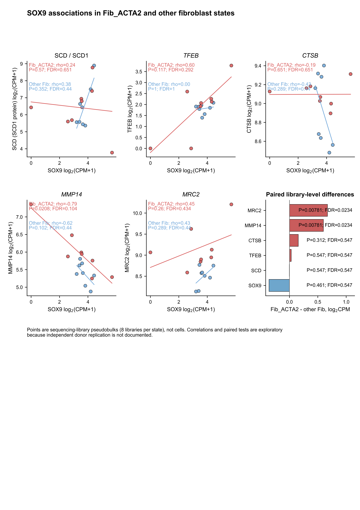

2026-10-16 · 按10月9日19条皮肤文库最新版整理 · GitHub版本：2026-10-20
实际执行：汇总复现35项、完整Fib重聚类7项、培养细胞矩阵级14项、10份空间输入32项检查通过；独立目录复现的9份CSV逐字节一致。
脱敏Table S1 · 字段字典 · 待补材料清单 · 文件SHA-256清单
python scripts/reproduce.py all --out outputs/my_replay_01
| asset_id | panel_id | status | reason |
|---|---|---|---|
| ATLAS_EXPRESSION | Figure1C | executed_verified | Five Welch P values and BH reproduced; all-Fib skin, true zeros retained |
| ATLAS_UMAP_DISPLAY | Figure1B-C | partial | Approved geometry-derived display frozen; full 465450-cell embedding refit not rerun; raw matrix access restricted |
| SKIN_FIB_CLUSTERING | Figure2A/B; linked A-E analysis | executed_verified | Complete 20270-cell clustering rerun and compared with approved geometry and marker table |
| SKIN_FIB_MARKERS_COMPOSITION | Figure2A/B; linked A-E analysis | executed_verified | Pristine dotplot body and complete-grid sample-level contrasts; E has no registered second contrast |
| HUMAN_SPACE | Figure1E current requested slot | partial | Region counts reproduced; main spatial maps are approved reference outputs; no raw-object rerun in public mode |
| RAT_SPACE | Figure3G current requested slot | partial | Six section counts reproduced; main spatial maps are frozen reference; no independent-animal inferential test |
| SPATIAL_SOURCE_COUNTS | Figure1E and Figure3G source-level gates | executed_verified | Ten source H5AD marker gates and registered human regions rerun; 32 checks; maps and upstream segmentation not rerun |
| CULTURE_NETWORK_DOWNSTREAM | Figure4H requested network/GO analysis | executed_verified | 37-target edges and eight-library pseudobulk recomputed from authorized counts; GO cache only |
| CULTURE_NETWORK_UPSTREAM | Figure4 network upstream SCENIC | partial | Target list exists; full GRNBoost2/cisTarget/AUCell commands, resource versions and execution logs not located |
| CULTURE_ORIGINAL_SEURAT | Figure4A/B/F/G and FigureS4A-C | partial | Original R analysis code/lockfile absent; 59855-entry RDS vs 59854 annotated H5AD and 17-marker clusters vs older 11-cluster metadata require reconciliation |
| CULTURE_GO_SOURCE | Figure4C; FigureS4D | partial | Fib_ACTA2 source GO table retained; other subtype enrichment/source gene lists and complete native analysis not packaged |
| CULTURE_GO_REGULON | Figure4 requested network GO | partial | Cached rendering reproduced; intersection field contains evidence codes; validated term-gene membership and original query resource snapshot missing |
| CULTURE_KEGG | Figure4C and FigureS4D KEGG | needs_evidence | Source file contains only an empty CSV string (3 bytes); no verified nonempty KEGG table |
| CULTURE_VENN | Figure4E | needs_evidence | Original two top50 lists, contrast direction, overlap IDs and 39-gene intersection not located |
| CULTURE_ASSOCIATIONS | Figure5A requested bioinformatics analysis | executed_verified | Eight-library Spearman and exact paired Wilcoxon statistics reproduced; SCD and four lysosomal targets |
| TABLE_S1 | TableS1 current scRNA usage | executed_verified | 104 actually used libraries, no PBMC; original clinical fields deliberately withheld |
| SCHEMATICS | Figure1A; Figure2K; Figure3A; Figure5/6/7 models | not_applicable | Not numerical evidence; generative prompts/assets are not mixed into analytical source data; diagram sources require separate permissions |
| F1_EXPERIMENTS | Figure1: D and remaining experimental panels | needs_evidence | Only manuscript/composite evidence located in current project analysis directories; experiment-level raw measurements and Prism/R procedures not located |
| F2_EXPERIMENTS | Figure2: C-J | needs_evidence | Only manuscript/composite evidence located in current project analysis directories; experiment-level raw measurements and Prism/R procedures not located |
| F3_EXPERIMENTS | Figure3: B-F/H | needs_evidence | Only manuscript/composite evidence located in current project analysis directories; experiment-level raw measurements and Prism/R procedures not located |
| F4_EXPERIMENTS | Figure4: D and protein-validation panels | needs_evidence | Only manuscript/composite evidence located in current project analysis directories; experiment-level raw measurements and Prism/R procedures not located |
| F5_EXPERIMENTS | Figure5: remaining wet-lab panels | needs_evidence | Only manuscript/composite evidence located in current project analysis directories; experiment-level raw measurements and Prism/R procedures not located |
| F6_EXPERIMENTS | Figure6: A-I | needs_evidence | Only manuscript/composite evidence located in current project analysis directories; experiment-level raw measurements and Prism/R procedures not located |
| F7_EXPERIMENTS | Figure7: animal/cell experiments and histology | needs_evidence | Only manuscript/composite evidence located in current project analysis directories; experiment-level raw measurements and Prism/R procedures not located |
| SUPP1_PUBLIC_ORGANS | FigureS1A-E | partial | Main five-organ data/units are preserved, but separate full source-panel analyses not independently certified; P1/P8 wording conflicts with current P8-only heart inputs |
| S2_EXPERIMENTS_OR_GAPS | FigureS2 | needs_evidence | Supporting document inspected; source quantitative analysis files not located, or panel/legend incomplete (notably S6/S8) |
| S3_EXPERIMENTS_OR_GAPS | FigureS3 | needs_evidence | Supporting document inspected; source quantitative analysis files not located, or panel/legend incomplete (notably S6/S8) |
| S4_EXPERIMENTS_OR_GAPS | FigureS4 | needs_evidence | Supporting document inspected; source quantitative analysis files not located, or panel/legend incomplete (notably S6/S8) |
| S5_EXPERIMENTS_OR_GAPS | FigureS5 | needs_evidence | Supporting document inspected; source quantitative analysis files not located, or panel/legend incomplete (notably S6/S8) |
| S6_EXPERIMENTS_OR_GAPS | FigureS6 | needs_evidence | Supporting document inspected; source quantitative analysis files not located, or panel/legend incomplete (notably S6/S8) |
| S7_EXPERIMENTS_OR_GAPS | FigureS7 | needs_evidence | Supporting document inspected; source quantitative analysis files not located, or panel/legend incomplete (notably S6/S8) |
| S8_EXPERIMENTS_OR_GAPS | FigureS8 | needs_evidence | Supporting document inspected; source quantitative analysis files not located, or panel/legend incomplete (notably S6/S8) |
| TABLE_S2 | TableS2 | partial | Oligonucleotide/primer sequences are in the supplementary document; not computational analyses and not independently sequence-validated here |
| TABLE_S3 | TableS3 | partial | Oligonucleotide/primer sequences are in the supplementary document; not computational analyses and not independently sequence-validated here |
| TABLE_S4 | TableS4 | partial | Oligonucleotide/primer sequences are in the supplementary document; not computational analyses and not independently sequence-validated here |
以下均为已有分析图，不是新实验数据；空间图为参考成图，默认运行不会冒称重新生成原始坐标。






